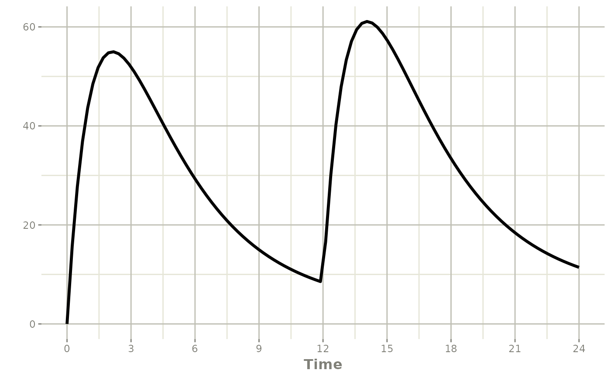
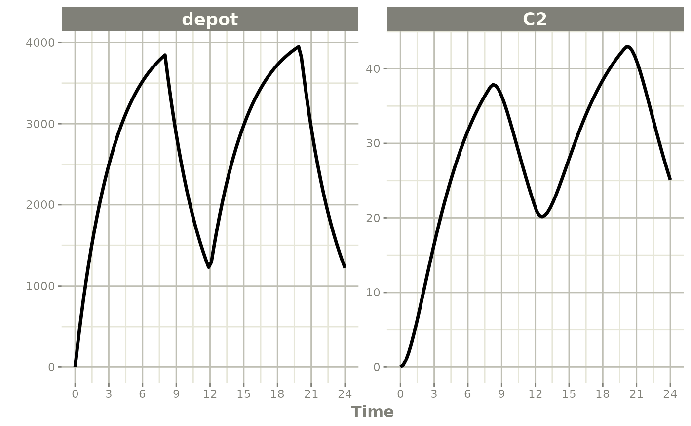
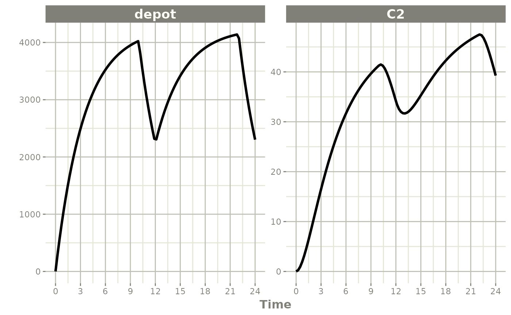
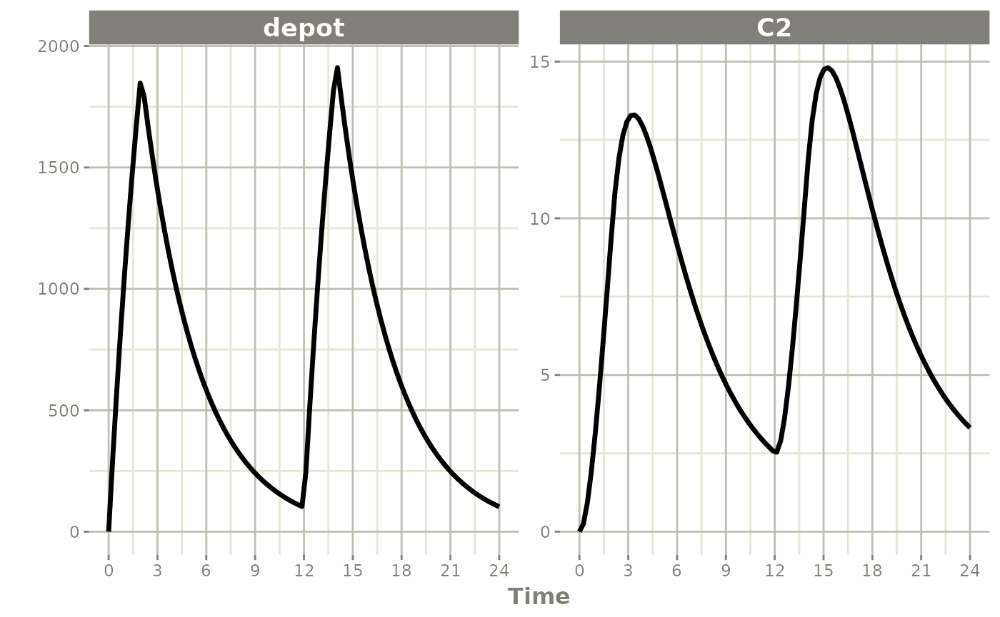
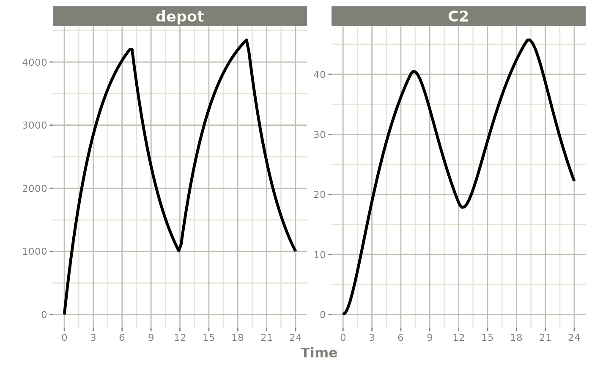
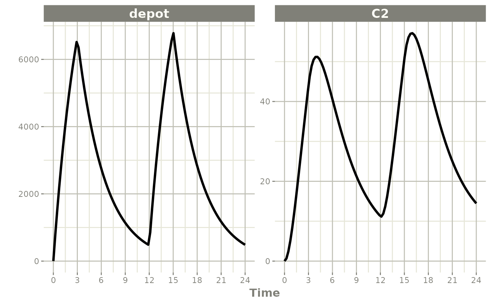
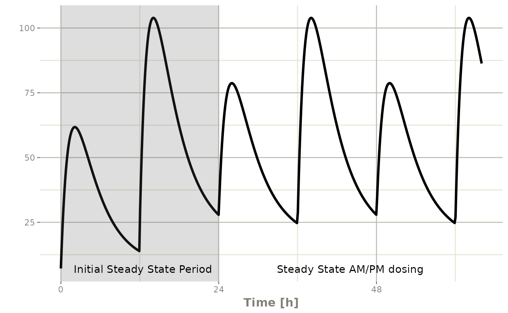
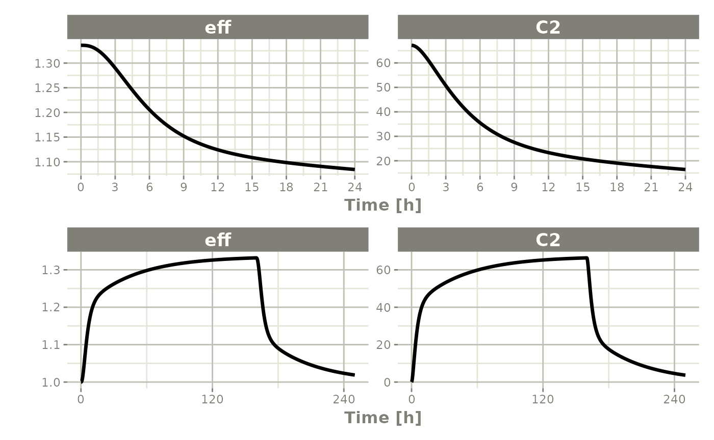
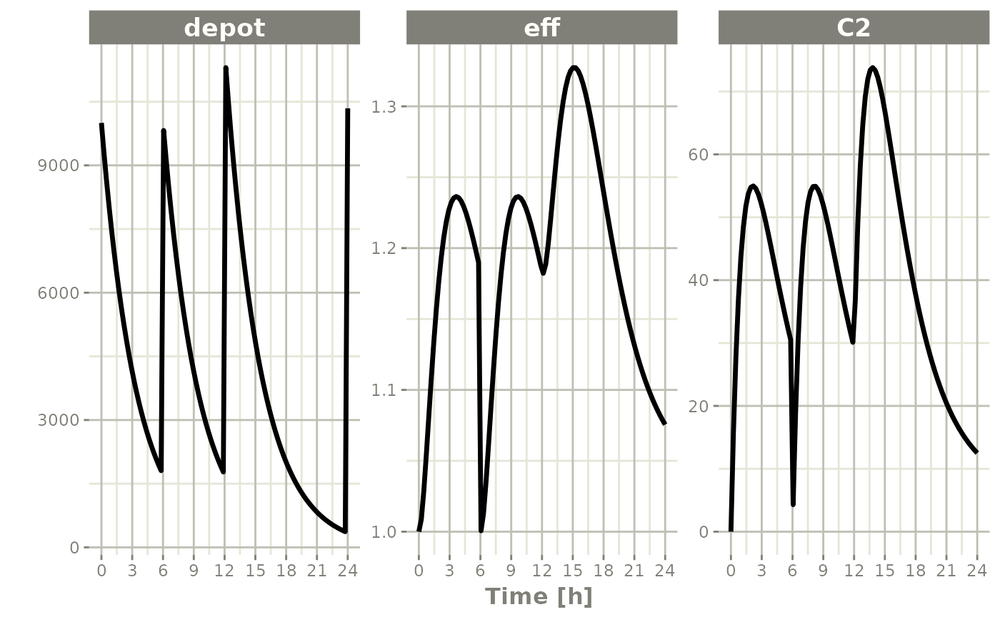
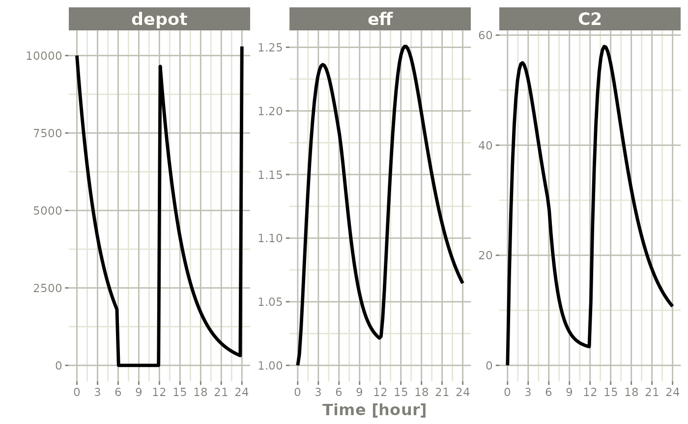

rxode2 Datasets and Event Types
2026-05-06
Source:vignettes/rxode2-event-types.Rmd
rxode2-event-types.Rmdrxode2 event tables
In general, rxode2 event tables follow NONMEM dataset conventions with the following exceptions and extensions:
- The compartment data item (
cmt) can be a string/factor with compartment names.- You may turn off a compartment with a negative compartment number or
"-cmt"wherecmtis the compartment name. - The compartment data item (
cmt) can still be a number; the number of a compartment is defined by the order of appearance of its name in the model. You can assign compartment numbers explicitly withcmt(cmtName)at the beginning of the model.
- You may turn off a compartment with a negative compartment number or
- An additional column
durcan specify the duration of infusions:- Bioavailability changes will change the rate of infusion
when
dur/amtare fixed in the input data. - Similarly, when specifying
rate/amtfor an infusion, bioavailability changes will alter the infusion duration sincerate/amtare fixed.
- Bioavailability changes will change the rate of infusion
when
- Some infrequent NONMEM columns are not supported:
pcmt,call. - NONMEM-style events are supported (0: Observation, 1: Dose, 2:
Other, 3: Reset, 4: Reset+Dose). Additional events are supported:
-
evid=5or replace event: replaces the value of a compartment with the value specified in theamtcolumn (equivalent todeSolvereplace). -
evid=6or multiply event: multiplies the compartment value by theamtcolumn (equivalent todeSolvemultiply). -
evid=7or transit/phantom event: puts the dose in thedose()function and calculates time since last dosetad(), but does not place the dose in the compartment. This allows thetransit()function to be applied easily.
-
Dataset column reference
Columns by type of use
Data for input into rxode2 (and nlmixr2) is
similar to NONMEM data; most NONMEM-ready datasets can be used
directly.
Observation columns
| Column | Meaning |
|---|---|
DV |
Dependent variable (measurement) |
CENS |
Censoring indicator (0 = not censored, 1 = left censored, -1 = right censored) |
LIMIT |
Censoring bound used with CENS (see below) |
MDV |
Missing dependent variable indicator |
CMT |
Compartment name or number for the observation |
DVID |
Dependent variable identifier for multiple endpoints |
EVID |
Event identifier |
Complete column quick-reference table
| Data Item | Meaning | Notes |
|---|---|---|
id |
Individual identifier | Integer, factor, character, or numeric |
time |
Individual time | Numeric |
amt |
Dose amount | Positive for doses; zero/NA for observations |
rate |
Infusion rate | Duration = amt/rate; rate=-1: rate
modeled; rate=-2: duration modeled |
dur |
Infusion duration | Rate = amt/dur
|
evid |
Event ID | 0=Obs; 1=Dose; 2=Other; 3=Reset; 4=Reset+Dose; 5=Replace; 6=Multiply; 7=Transit |
cmt |
Compartment | Name or number; prefix - to turn off |
ss |
Steady-state flag | 0=non-SS; 1=SS; 2=SS + keep prior states |
ii |
Inter-dose interval | Time between doses |
addl |
Additional doses | Number of doses identical to this one |
dvid |
DV identifier | Identifies which endpoint an observation belongs to |
Per-column details
AMT column
The AMT column defines the amount of a dose administered
to CMT. For observation rows it should be 0 or
NA. For zero-order infusions the rate or duration is set
via RATE or DUR.
CENS / LIMIT columns
CENS indicates whether the observation in
DV is censored:
-
CENS = 0: not censored;LIMITis ignored. -
CENS = 1: left censored (e.g., below the limit of quantification); the true value lies in (LIMIT,DV). -
CENS = -1: right censored (above limit of quantification); the true value lies in (DV,LIMIT).
rxode2 stores these values so that nlmixr2
can use them in likelihood calculations.
CMT column
CMT indicates the compartment where an event occurs. A
character string or factor (the preferred form) is matched by name in
the model. An integer is matched by the order in which compartments
appear in the model. Prefix with -
(e.g. cmt="-depot") to turn off a compartment.
DUR column
DUR defines the duration of a zero-order infusion. When
DUR is specified, the infusion rate is computed as
rate = amt/dur. Bioavailability changes affect the rate,
not the duration.
DV column
DV is the dependent variable in the observation
compartment defined by CMT / DVID. It may be
missing (MDV=1) or censored (CENS≠0).
DVID column
DVID identifies which endpoint an observation belongs to
in multi-endpoint models. It maps to the cond field in
$predDf and can be specified as a name (matching the
endpoint variable) or integer.
EVID column
The event identifier for a row of data:
EVID |
Meaning |
|---|---|
| 0 | Observation |
| 1 | Dose |
| 2 | Other (e.g. turn off compartment) |
| 3 | Reset all compartments to initial values |
| 4 | Reset + dose |
| 5 | Replace compartment value with amt
|
| 6 | Multiply compartment value by amt
|
| 7 | Transit/phantom dose (dose() / tad()
only) |
Output-only EVID values (visible when
addDosing=TRUE, subsetNonmem=FALSE):
EVID |
Meaning |
|---|---|
| -1 | Modeled-rate infusion end (rate=-1) |
| -2 | Modeled-duration infusion end (rate=-2) |
| -10 | Rate-specified infusion end (rate>0) |
| -20 | Duration-specified infusion end (dur>0) |
| 101, 102, … | Modeled times 1, 2, … (mtime) |
Use addDosing=NA to see classic EVID
equivalents instead.
ID column
ID separates individuals (persons, animals, etc.). The
solver re-initialises the numerical integrator and samples new random
effects with each new ID. It may be an integer, character,
or factor.
RATE column
RATE specifies a zero-order infusion rate. The infusion
duration is computed as dur = amt/rate. Special values:
-
rate = -1: rate is modeled (set viarate(cmt)in the model block); equivalent to NONMEMRATE=-1. -
rate = -2: duration is modeled (set viadur(cmt)in the model block); equivalent to NONMEMRATE=-2.
When RATE is fixed in the dataset, a bioavailability
change alters the infusion duration. When DUR is
fixed instead, a bioavailability change alters the infusion
rate.
Other notes:
-
NONMEM’sDVis not required;rxode2is an ODE solving framework andDVis only used bynlmixr2. -
NONMEM’sMDVis not required; missingness is captured inEVID. - Instead of NONMEM-compatible data,
deSolve-compatible data frames are also accepted. - The classic RxODE
EVIDencoding is also supported (see Classic rxode2 Events).
Event type examples
To illustrate each event type, the following model from the original
rxode2 tutorial is used throughout:
#> rxode2 5.0.2 using 2 threads (see ?getRxThreads)
#> no cache: create with `rxCreateCache()`
m1 <- function() {
ini({
KA <- 2.94E-01
CL <- 1.86E+01
V2 <- 4.02E+01
Q <- 1.05E+01
V3 <- 2.97E+02
Kin <- 1
Kout <- 1
EC50 <- 200
## Modeled bioavailability, duration and rate
fdepot <- 1
durDepot <- 8
rateDepot <- 1250
})
model({
C2 <- centr/V2
C3 <- peri/V3
d/dt(depot) <- -KA*depot
f(depot) <- fdepot
dur(depot) <- durDepot
rate(depot) <- rateDepot
d/dt(centr) <- KA*depot - CL*C2 - Q*C2 + Q*C3
d/dt(peri) <- Q*C2 - Q*C3
d/dt(eff) <- Kin - Kout*(1-C2/(EC50+C2))*eff
eff(0) <- 1
})
}Bolus/Additive Doses
A bolus dose is the default dose type and only requires
amt.
#> -- EventTable with 101 records --
#> 1 dosing records (see x$get.dosing(); add with add.dosing or et)
#> 100 observation times (see x$get.sampling(); add with add.sampling or et)
#> multiple doses in `addl` columns, expand with x$expand(); or etExpand(x)
#> -- First part of x: --
#> # A tibble: 101 x 5
#> time amt ii addl evid
#> [h] <dbl> [h] <int> <evid>
#> 1 0 NA NA NA 0:Observation
#> 2 0 10000 12 2 1:Dose (Add)
#> 3 0.242 NA NA NA 0:Observation
#> 4 0.485 NA NA NA 0:Observation
#> 5 0.727 NA NA NA 0:Observation
#> 6 0.970 NA NA NA 0:Observation
#> 7 1.21 NA NA NA 0:Observation
#> 8 1.45 NA NA NA 0:Observation
#> 9 1.70 NA NA NA 0:Observation
#> 10 1.94 NA NA NA 0:Observation
#> # i 91 more rows#> i parameter labels from comments are typically ignored in non-interactive mode#> i Need to run with the source intact to parse comments
Infusion Doses
rxode2 supports several infusion types:
- Constant rate infusion (
rate) - Constant duration infusion (
dur) - Estimated (modeled) rate of infusion
- Estimated (modeled) duration of infusion
Constant infusion specified by duration or rate
Using dur
ev <- et(timeUnits="hr") |>
et(amt=10000, ii=12, until=24, dur=8) |>
et(seq(0, 24, length.out=100))
ev#> -- EventTable with 101 records --
#> 1 dosing records (see x$get.dosing(); add with add.dosing or et)
#> 100 observation times (see x$get.sampling(); add with add.sampling or et)
#> multiple doses in `addl` columns, expand with x$expand(); or etExpand(x)
#> -- First part of x: --
#> # A tibble: 101 x 6
#> time amt ii addl evid dur
#> [h] <dbl> [h] <int> <evid> [h]
#> 1 0 NA NA NA 0:Observation NA
#> 2 0 10000 12 2 1:Dose (Add) 8
#> 3 0.242 NA NA NA 0:Observation NA
#> 4 0.485 NA NA NA 0:Observation NA
#> 5 0.727 NA NA NA 0:Observation NA
#> 6 0.970 NA NA NA 0:Observation NA
#> 7 1.21 NA NA NA 0:Observation NA
#> 8 1.45 NA NA NA 0:Observation NA
#> 9 1.70 NA NA NA 0:Observation NA
#> 10 1.94 NA NA NA 0:Observation NA
#> # i 91 more rows#> i parameter labels from comments are typically ignored in non-interactive mode#> i Need to run with the source intact to parse comments
Using rate
ev <- et(timeUnits="hr") |>
et(amt=10000, ii=12, until=24, rate=10000/8) |>
et(seq(0, 24, length.out=100))
ev#> -- EventTable with 101 records --
#> 1 dosing records (see x$get.dosing(); add with add.dosing or et)
#> 100 observation times (see x$get.sampling(); add with add.sampling or et)
#> multiple doses in `addl` columns, expand with x$expand(); or etExpand(x)
#> -- First part of x: --
#> # A tibble: 101 x 6
#> time amt rate ii addl evid
#> [h] <dbl> <rate/dur> [h] <int> <evid>
#> 1 0 NA NA NA NA 0:Observation
#> 2 0 10000 1250 12 2 1:Dose (Add)
#> 3 0.242 NA NA NA NA 0:Observation
#> 4 0.485 NA NA NA NA 0:Observation
#> 5 0.727 NA NA NA NA 0:Observation
#> 6 0.970 NA NA NA NA 0:Observation
#> 7 1.21 NA NA NA NA 0:Observation
#> 8 1.45 NA NA NA NA 0:Observation
#> 9 1.70 NA NA NA NA 0:Observation
#> 10 1.94 NA NA NA NA 0:Observation
#> # i 91 more rows#> i parameter labels from comments are typically ignored in non-interactive mode#> i Need to run with the source intact to parse comments
The two specifications produce the same nominal infusion. The difference appears when bioavailability changes.
When rate is fixed in the event table, a bioavailability
decrease shortens the infusion duration (as in NONMEM):
#> i parameter labels from comments are typically ignored in non-interactive mode#> i Need to run with the source intact to parse comments
#> i parameter labels from comments are typically ignored in non-interactive mode
#> i Need to run with the source intact to parse comments
When dur is fixed instead, a bioavailability change
alters the infusion rate:
ev <- et(timeUnits="hr") |>
et(amt=10000, ii=12, until=24, dur=8) |>
et(seq(0, 24, length.out=100))
library(ggplot2)
library(patchwork)
p1 <- rxSolve(m1, ev, c(fdepot=1.25)) |> plot(depot) +
xlab("Time") + ylim(0, 5000)#> i parameter labels from comments are typically ignored in non-interactive mode#> i Need to run with the source intact to parse comments#> i parameter labels from comments are typically ignored in non-interactive mode
#> i Need to run with the source intact to parse comments
p1 * p2Modeled rate and duration of infusion
Model the infusion duration (rate=-2, equivalent to
NONMEM RATE=-2):
ev <- et(timeUnits="hr") |>
et(amt=10000, ii=12, until=24, rate=-2) |>
et(seq(0, 24, length.out=100))
ev#> -- EventTable with 101 records --
#> 1 dosing records (see x$get.dosing(); add with add.dosing or et)
#> 100 observation times (see x$get.sampling(); add with add.sampling or et)
#> multiple doses in `addl` columns, expand with x$expand(); or etExpand(x)
#> -- First part of x: --
#> # A tibble: 101 x 6
#> time amt rate ii addl evid
#> [h] <dbl> <rate/dur> [h] <int> <evid>
#> 1 0 NA NA NA NA 0:Observation
#> 2 0 10000 -2:dur 12 2 1:Dose (Add)
#> 3 0.242 NA NA NA NA 0:Observation
#> 4 0.485 NA NA NA NA 0:Observation
#> 5 0.727 NA NA NA NA 0:Observation
#> 6 0.970 NA NA NA NA 0:Observation
#> 7 1.21 NA NA NA NA 0:Observation
#> 8 1.45 NA NA NA NA 0:Observation
#> 9 1.70 NA NA NA NA 0:Observation
#> 10 1.94 NA NA NA NA 0:Observation
#> # i 91 more rows#> i parameter labels from comments are typically ignored in non-interactive mode#> i Need to run with the source intact to parse comments
Model the infusion rate (rate=-1, equivalent to NONMEM
RATE=-1):
ev <- et(timeUnits="hr") |>
et(amt=10000, ii=12, until=24, rate=-1) |>
et(seq(0, 24, length.out=100))
ev#> -- EventTable with 101 records --
#> 1 dosing records (see x$get.dosing(); add with add.dosing or et)
#> 100 observation times (see x$get.sampling(); add with add.sampling or et)
#> multiple doses in `addl` columns, expand with x$expand(); or etExpand(x)
#> -- First part of x: --
#> # A tibble: 101 x 6
#> time amt rate ii addl evid
#> [h] <dbl> <rate/dur> [h] <int> <evid>
#> 1 0 NA NA NA NA 0:Observation
#> 2 0 10000 -1:rate 12 2 1:Dose (Add)
#> 3 0.242 NA NA NA NA 0:Observation
#> 4 0.485 NA NA NA NA 0:Observation
#> 5 0.727 NA NA NA NA 0:Observation
#> 6 0.970 NA NA NA NA 0:Observation
#> 7 1.21 NA NA NA NA 0:Observation
#> 8 1.45 NA NA NA NA 0:Observation
#> 9 1.70 NA NA NA NA 0:Observation
#> 10 1.94 NA NA NA NA 0:Observation
#> # i 91 more rows#> i parameter labels from comments are typically ignored in non-interactive mode#> i Need to run with the source intact to parse comments
Steady State
Steady-state doses are solved until a constant inter-dose interval produces a repeating cycle.
#> -- EventTable with 101 records --
#> 1 dosing records (see x$get.dosing(); add with add.dosing or et)
#> 100 observation times (see x$get.sampling(); add with add.sampling or et)
#> -- First part of x: --
#> # A tibble: 101 x 5
#> time amt ii evid ss
#> [h] <dbl> [h] <evid> <int>
#> 1 0 NA NA 0:Observation NA
#> 2 0 10000 12 1:Dose (Add) 1
#> 3 0.242 NA NA 0:Observation NA
#> 4 0.485 NA NA 0:Observation NA
#> 5 0.727 NA NA 0:Observation NA
#> 6 0.970 NA NA 0:Observation NA
#> 7 1.21 NA NA 0:Observation NA
#> 8 1.45 NA NA 0:Observation NA
#> 9 1.70 NA NA 0:Observation NA
#> 10 1.94 NA NA 0:Observation NA
#> # i 91 more rows#> i parameter labels from comments are typically ignored in non-interactive mode#> i Need to run with the source intact to parse comments
Steady state for complex dosing (ss=2)
ss=2 uses superposition to achieve steady state for
non-uniform dosing regimens (e.g. morning 100 mg vs evening 150 mg):
- All state values are saved.
- States are reset and solved to steady state.
- Saved state values are added back.
ev <- et(timeUnits="hr") |>
et(amt=10000, ii=24, ss=1) |>
et(time=12, amt=15000, ii=24, ss=2) |>
et(time=24, amt=10000, ii=24, addl=3) |>
et(time=36, amt=15000, ii=24, addl=3) |>
et(seq(0, 64, length.out=500))
library(ggplot2)
rxSolve(m1, ev, maxsteps=10000) |> plot(C2) +
annotate("rect", xmin=0, xmax=24, ymin=-Inf, ymax=Inf, alpha=0.2) +
annotate("text", x=12.5, y=7, label="Initial Steady State Period") +
annotate("text", x=44, y=7, label="Steady State AM/PM dosing")#> i parameter labels from comments are typically ignored in non-interactive mode#> i Need to run with the source intact to parse comments
It takes a full dose cycle to reach the true complex steady-state.
Steady state for constant infusion or zero-order processes
Constant-infusion steady state (as in NONMEM):
- No inter-dose interval:
ii=0 - Steady-state flag:
ss=1 - Positive rate (
rate>0) or estimated rate (rate=-1) - Zero dose:
amt=0
The infusion is turned off once steady state is reached, just like
NONMEM. Note that rate=-2 (modeled duration) and modeled
bioavailability have no effect for this event type.
#> i parameter labels from comments are typically ignored in non-interactive mode#> i Need to run with the source intact to parse comments
ev <- et(timeUnits="hr") |>
et(amt=200000, rate=10000/8) |>
et(0, 250, length.out=1000)
p2 <- rxSolve(m1, ev) |> plot(C2, eff)#> i parameter labels from comments are typically ignored in non-interactive mode
#> i Need to run with the source intact to parse comments
This technique can also be used for steady-state disease processes.
Reset Events
evid=3 (or evid=reset) resets all
compartments to their initial values. evid=4 resets and
then applies a dose.
ev <- et(timeUnits="hr") |>
et(amt=10000, ii=12, addl=3) |>
et(time=6, evid=reset) |>
et(seq(0, 24, length.out=100))
ev#> -- EventTable with 102 records --
#> 1 dosing records (see x$get.dosing(); add with add.dosing or et)
#> 101 observation times (see x$get.sampling(); add with add.sampling or et)
#> multiple doses in `addl` columns, expand with x$expand(); or etExpand(x)
#> -- First part of x: --
#> # A tibble: 102 x 5
#> time amt ii addl evid
#> [h] <dbl> [h] <int> <evid>
#> 1 0 NA NA NA 0:Observation
#> 2 0 10000 12 3 1:Dose (Add)
#> 3 0.242 NA NA NA 0:Observation
#> 4 0.485 NA NA NA 0:Observation
#> 5 0.727 NA NA NA 0:Observation
#> 6 0.970 NA NA NA 0:Observation
#> 7 1.21 NA NA NA 0:Observation
#> 8 1.45 NA NA NA 0:Observation
#> 9 1.70 NA NA NA 0:Observation
#> 10 1.94 NA NA NA 0:Observation
#> # i 92 more rows#> i parameter labels from comments are typically ignored in non-interactive mode#> i Need to run with the source intact to parse comments
All compartments are reset to their initial values at 6 hours.
ev <- et(timeUnits="hr") |>
et(amt=10000, ii=12, addl=3) |>
et(time=6, amt=10000, evid=4) |>
et(seq(0, 24, length.out=100))#> i parameter labels from comments are typically ignored in non-interactive mode#> i Need to run with the source intact to parse comments
Turning off compartments
Setting cmt="-depot" with evid=2 turns off
a compartment: its value is set to the initial value, but other
compartments are unchanged. A subsequent dose to that compartment turns
it back on.
ev <- et(timeUnits="hr") |>
et(amt=10000, ii=12, addl=3) |>
et(time=6, cmt="-depot", evid=2) |>
et(seq(0, 24, length.out=100))
ev#> -- EventTable with 102 records --
#> 1 dosing records (see x$get.dosing(); add with add.dosing or et)
#> 101 observation times (see x$get.sampling(); add with add.sampling or et)
#> multiple doses in `addl` columns, expand with x$expand(); or etExpand(x)
#> -- First part of x: --
#> # A tibble: 102 x 6
#> time cmt amt ii addl evid
#> [h] <chr> <dbl> [h] <int> <evid>
#> 1 0 NA NA NA NA 0:Observation
#> 2 0 (default) 10000 12 3 1:Dose (Add)
#> 3 0.242 NA NA NA NA 0:Observation
#> 4 0.485 NA NA NA NA 0:Observation
#> 5 0.727 NA NA NA NA 0:Observation
#> 6 0.970 NA NA NA NA 0:Observation
#> 7 1.21 NA NA NA NA 0:Observation
#> 8 1.45 NA NA NA NA 0:Observation
#> 9 1.70 NA NA NA NA 0:Observation
#> 10 1.94 NA NA NA NA 0:Observation
#> # i 92 more rows#> i parameter labels from comments are typically ignored in non-interactive mode#> i Need to run with the source intact to parse comments
Note that a dose turns back on only the compartment that was dosed. Turning off the effect compartment keeps it off even after a new depot dose:
ev <- et(timeUnits="hr") |>
et(amt=10000, ii=12, addl=3) |>
et(time=6, cmt="-eff", evid=2) |>
et(seq(0, 24, length.out=100))
rxSolve(m1, ev) |> plot(depot, C2, eff)#> i parameter labels from comments are typically ignored in non-interactive mode#> i Need to run with the source intact to parse comments
To re-enable it, send a zero dose or an evid=2 event to
the compartment:
ev <- et(timeUnits="hr") |>
et(amt=10000, ii=12, addl=3) |>
et(time=6, cmt="-eff", evid=2) |>
et(time=12, cmt="eff", evid=2) |>
et(seq(0, 24, length.out=100))
rxSolve(m1, ev) |> plot(depot, C2, eff)#> i parameter labels from comments are typically ignored in non-interactive mode#> i Need to run with the source intact to parse comments